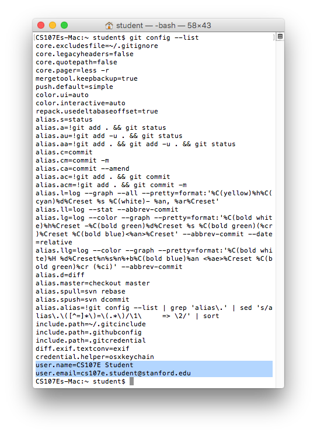
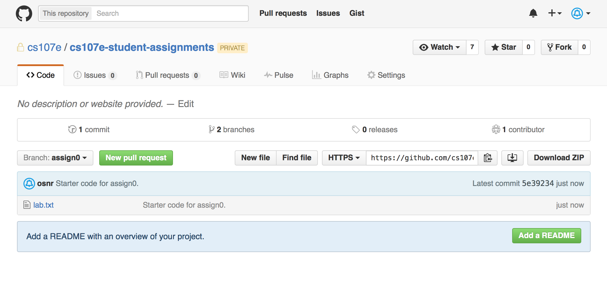
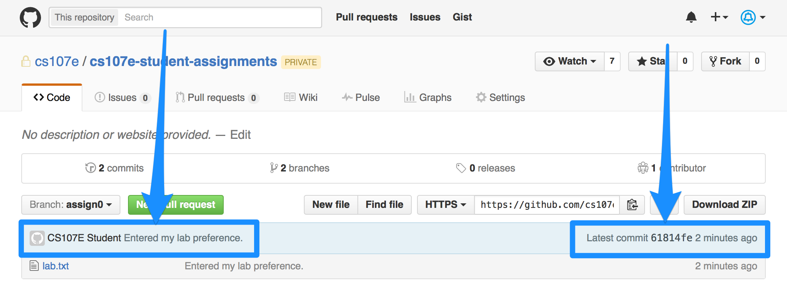
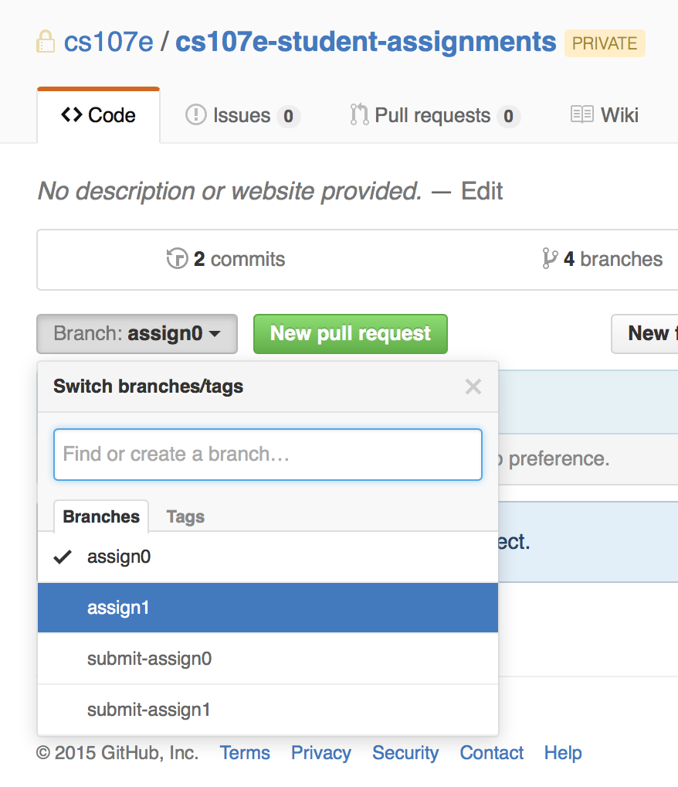
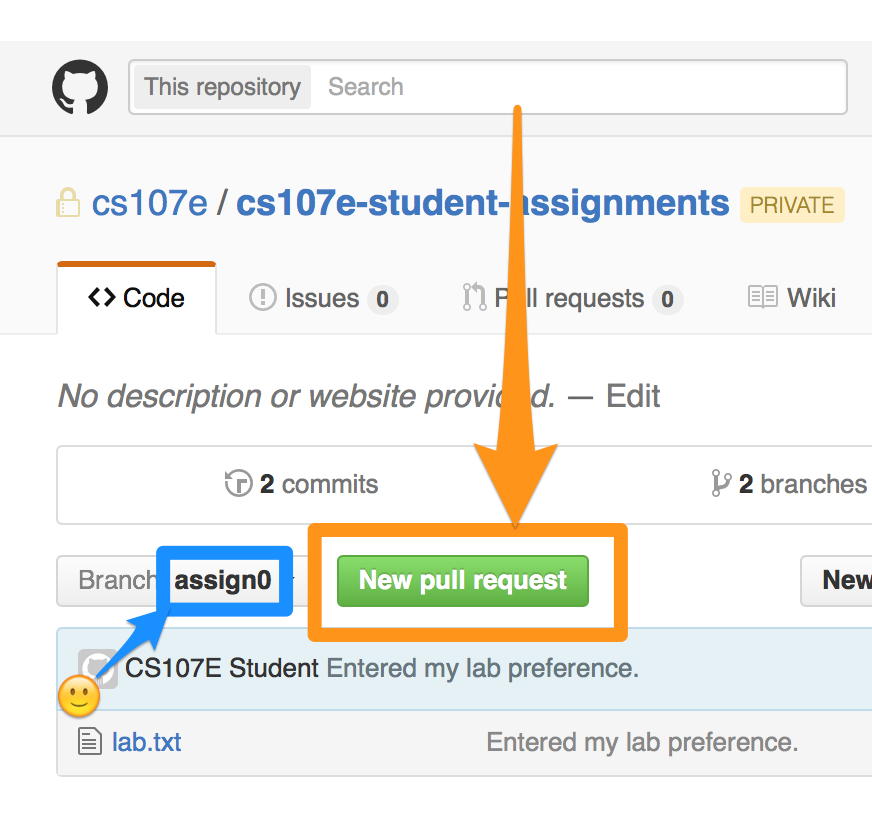
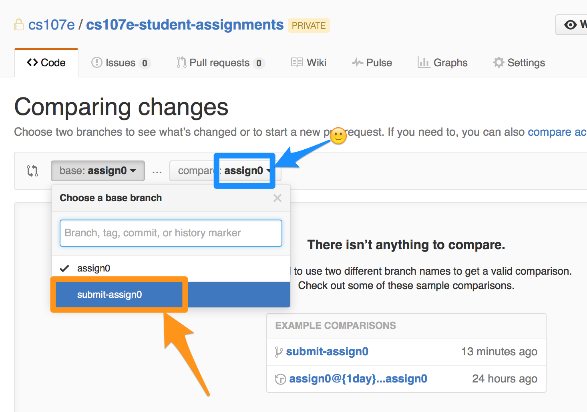
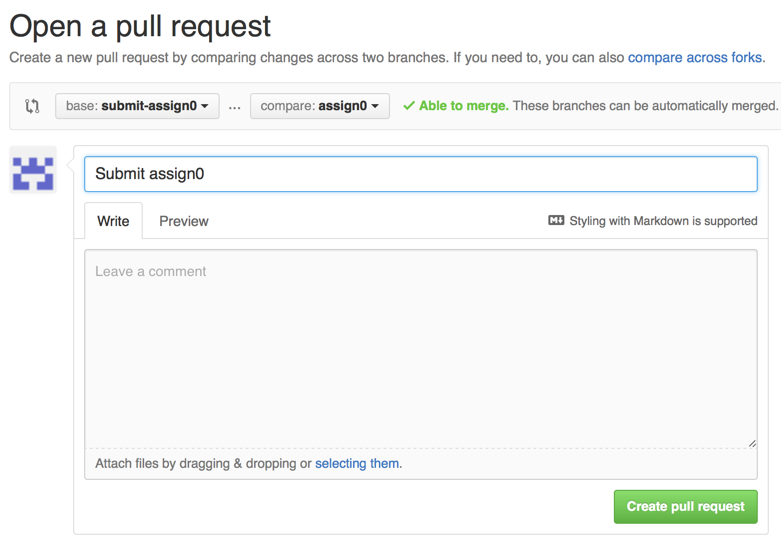
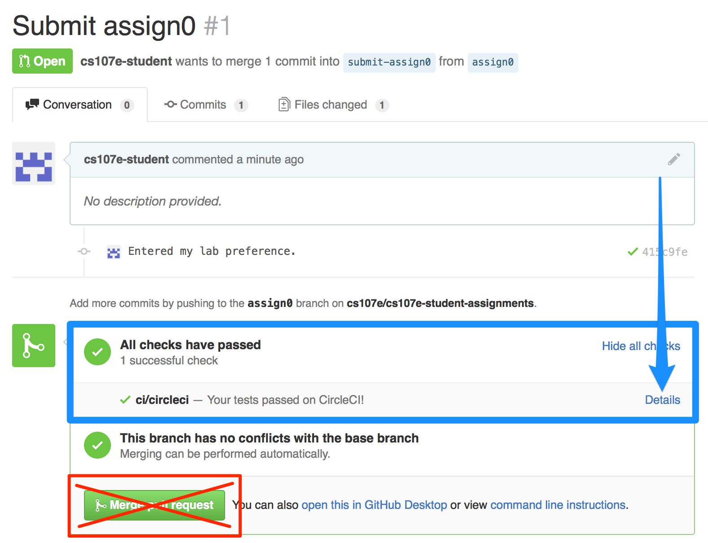
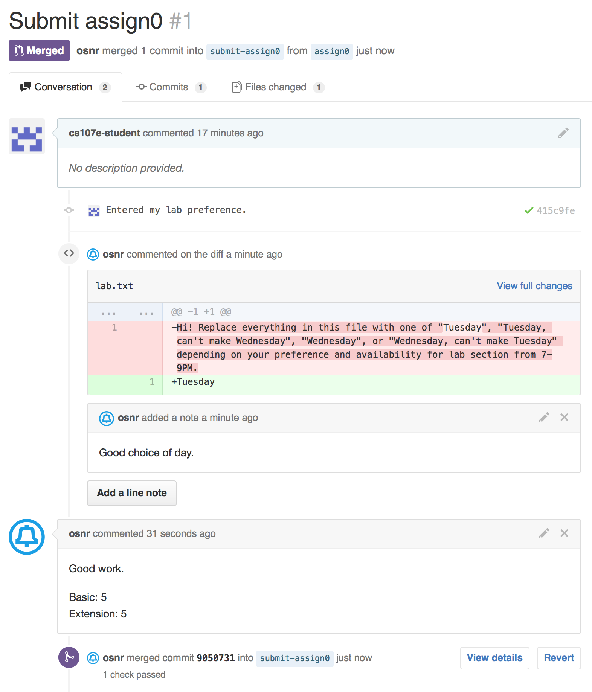

Part 1 Google form deadline: Friday, April 1, 2016, 1:30 PM (start of class)
Part 2 deadline: Sunday, April 3, 2016, 11:59 PM
(No late days can be used on this assignment.)
Welcome to CS107E!
We have two goals for this assignment:
You’ll tell us which lab section you prefer. (This’ll be your ‘solution’ to the assignment.)
We’ll make sure that you know how to download an assignment, check in your solution, and submit it to us for grading.
In this class, you’ll use a version control system called Git to keep track of your work, so you’ll learn a little about how to use it.
(Git and the GitHub website are used all the time in industry to track work on projects, too. In fact, the way you use them here will basically be best practice for many small and medium-sized companies and teams. Programmers write code and then check it into a central repository on something like GitHub for other programmers to look at, review, and build on.)
Steps
Step 0: Prerequisites
This assignment expects you to know how to use the UNIX command line on Linux or OS X, and how to edit a text file.
If you’re on Windows, you should have set up a Linux virtual machine; you’ll be using that machine for all assignments, including this one.
See our UNIX guide if you need information about these topics. The standard CS 107 will also have a UNIX lab in week 1 which we’ll announce to the class, should you want to attend.
You should also read through the other course guides for information about hardware and the Pi, which we’ll start working with in week 2.
Part 1
Step 1: Set up Git
First, install Git on your Mac or Linux machine.
Then open a Terminal window and type everything after $ on these lines so that Git marks your changes with who you are:
(Replace My Name and myemail@stanford.edu with your own.)
$ git config --global user.name "My Name"
$ git config --global user.email myemail@stanford.edu
You might want to change the text editor Git uses (when it asks you to write a summary of your changes). If you prefer Emacs, for example:
$ git config --global core.editor emacs
Now check that you’ve done everything right so far; this command should print out the settings you just put in:
$ git config --list
...
user.name=My Name
user.email=myemail@stanford.edu

Step 2: Get started with GitHub
GitHub is the site that will host all the assignments. You’ll download assignments from there and later push your solutions back up.
If you don’t have an account already, sign up now. Then fill in our Google form so we know what your GitHub username is. You should do this by class on Friday of week 1.
We’ll set up a private repository just for your assignments, inside the CS107e organization, after we’ve got everyone’s accounts.
We’ll e-mail you then, once you’ve been set up and ready to move on to Part 2. (We’ll do this for everyone sometime on Friday of week 1.)
Part 2
Step 3: Download assignment 0’s ‘starter code’
(Note: for the rest of this assignment, whenever you type in a command, you should replace any instances of [YOUR-GITHUB-USERNAME] with the username you picked for your GitHub account.)
Once we’ve set up your GitHub account, you should be able to type this URL into your browser (replacing [YOUR-GITHUB-USERNAME] with yours) and see your personal assignment repository:
https://github.com/cs107e/[YOUR-GITHUB-USERNAME]-assignments

You’ll begin each assignment by cloning the branch in your personal repository that corresponds to the assignment.
So clone the assign0 branch now with this command; it’ll download the starter code into a new folder called assign0. You’ll do your work inside that folder. (You might have to type in your GitHub username and password.)
$ git clone -b assign0 https://github.com/cs107e/[YOUR-GITHUB-USERNAME]-assignments assign0
remote: Counting objects: 3, done.
remote: Total 3 (delta 0), reused 0 (delta 0), pack-reused 3
Unpacking objects: 100% (3/3), done.
Checking connectivity... done.
Important: always make sure that you specify the -b assignX (-b assign0, -b assign1, or whatever the assignment is) option when starting an assignment. Otherwise, you might get the wrong starter code and submit to the wrong place!
Now you can cd assign0 to move into that folder and run ls to see the starter file there. There should be just one, lab.txt.
$ ls
lab.txt
Step 4: Write down your lab preference
We’ll have two lab sections this quarter:
- Every Tuesday, 7-9 PM
- Every Wednesday, 6:30-8:30 PM
Open lab.txt in a text editor. Replace its contents with one of these four options. Make sure you use the exact same text (your submission will be automatically checked):
TuesdayTuesday, can't make WednesdayWednesdayWednesday, can't make Tuesday
Save the file.
Step 5: Commit your change
Now Git recognizes that you’ve changed the assignment from the original starter code. Run git status and you should see something like:
$ git status
On branch assign0
Your branch is up-to-date with 'origin/assign0'.
Changes not staged for commit:
(use "git add <file>..." to update what will be committed)
(use "git checkout -- <file>..." to discard changes in working directory)
modified: lab.txt
no changes added to commit (use "git add" and/or "git commit -a")
Next you’ll commit the change you just made and set a kind of ‘checkpoint’ with the folder how it is right now.
First, stage the lab.txt file so Git knows to record it as part of the commit.
$ git add lab.txt
Note that Git now expects lab.txt to be included when we commit:
$ git status
On branch assign0
Your branch is up-to-date with 'origin/assign0'.
Changes to be committed:
(use "git reset HEAD <file>..." to unstage)
modified: lab.txt
Finally, commit your change, along with a short description of what exactly you did to the original code. Your terminal output should resemble:
$ git commit -m "Entered my lab preference."
[assign0 019f726] Entered my lab preference.
1 file changed, 1 insertion(+), 1 deletion(-)
Though it’s not required (you only need to commit once – when you’re done – to submit), we recommend that you commit every time you make meaningful progress, including that final time.
Step 6: Submit the ‘assignment’ (push and then make a pull request)
Step 6.1: Push to GitHub
Let’s push our changes back online to GitHub, so we can submit them to the course staff for grading.
$ git push
Counting objects: 3, done.
Delta compression using up to 2 threads.
Compressing objects: 100% (1/1), done.
Writing objects: 100% (3/3), 265 bytes | 0 bytes/s, done.
Total 3 (delta 0), reused 0 (delta 0)
To https://github.com/cs107e/your-username-assignments.git
5e39234..61814fe assign0 -> assign0
If you go to your assignment repo page at https://github.com/cs107e/[YOUR-GITHUB-USERNAME]-assignments now, you should see your change.

Note that this page will probably show assign0 by default, which is what we’re looking for right now. But for future assignments, you might need to manually change to the branch for that assignment to see your code on GitHub:

(The submit-assignX branches are placeholders used for submission; you shouldn’t need to touch them other than using them as base branches for your submission pull request [see the next section].)
Step 6.2: Create a pull request
It’s time to actually submit the assignment for grading. In this course, we’ll use GitHub’s pull request feature to handle assignment submission and to give you feedback on your code.
(In a work environment, you might want to write a new feature or make some other change without disrupting the master copy of the code. You’d go off on a separate branch, do your work, and then create a pull request when you were done. A pull request is you asking your coworkers to review your changes and, if they look good, merge them back into the main line of code. We’re using pull requests similarly, except a grader instead of a coworker is reviewing your code, and the master copy is just the starter code.)
Open the assignment repository page in your browser. Make sure it’s on branch assign0; you can also go to https://github.com/cs107e/[YOUR-GITHUB-USERNAME]-assignments/tree/assign0 directly.
Click the ‘New pull request’ button on your assignment repository page.

It’ll say “There isn’t anything to compare” at first. You need to set the base branch to submit-assign0. Make sure the branch shown next to ‘compare’ is assign0, too.

Then you’ll get a comparison of your project to your starter code, plus some areas to describe the changes.
Set the Title to “Submit assign0” and leave the description blank. (You should write a separate README file in your repository if you want to make comments.)

Then click ‘Create pull request’. You’ll get this pull request page:

You should see a green checkmark and a message that “All checks have passed”. You might need to wait a minute or two and refresh if they’re still running. (If the checks don’t pass, then make sure you replaced lab.txt with one of the four choices we gave!)
We have some basic automatic checks that will run on each assignment; you can see more about the results by clicking Details. In assignment 0, the check is just that you wrote down one of the four choices in lab.txt.
If you push changes to your assignment after creating the pull request (to fix any errors the checker detected, for example), they’ll automatically get added to this page. You might want to bookmark it, because the grader will give you feedback on your code here later.
But do not click ‘Merge pull request’! Your grader will click that button to let you know that they’re done grading your assignment.
(Note: the time of the last commit you push onto the pull request, not the time you clicked ‘Create pull request’, will be considered your time of submission for deadlines and late days. If you create the pull request at 11:59 but then push an extra commit on at 12:01 to fix an error from the autochecker, you’re past the deadline.)
Afterward: Grader’s code review
As we review your code, we’ll put both line-specific and general comments on the pull request page:

Click the ‘Files changed’ tab to see your whole solution from top to bottom, along with the comments your grader made.

When your grader’s done with their review, they’ll click the Merge button themselves, just like a coworker might Merge a pull request when they’re satisfied that it doesn’t break anything.